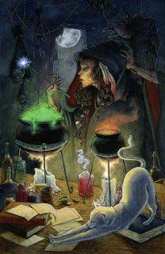
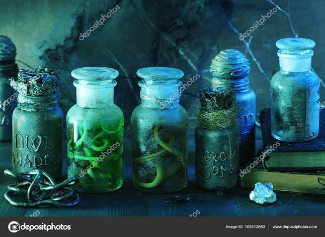
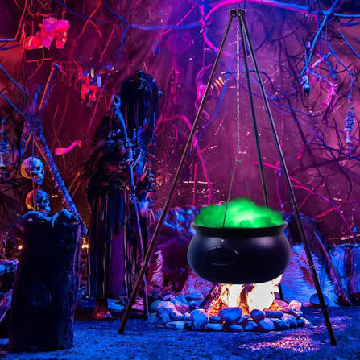

A Poções e Soluções é uma loja tradicional localizada no Beco da Última Saída, comandada por Annabelle Merigold. Vendemos poções artesanais de diversos tipos, preparadas com ingredientes raros e muito cuidado.
A loja foi criada em 1867 e desde então atende bruxos de todo o mundo com suas poções e soluções.


